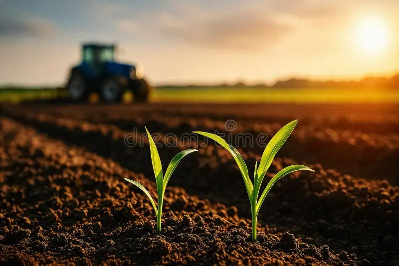

We are committed to building a thriving agricultural future by combining traditional farming practices with modern digital solutions. Our platform supports farmers across Uganda to increase productivity, access markets, and improve livelihoods.
Juliet's Agric Enterprise is a farmer-centered organization focused on supporting smallholder farmers through technology, training, and market integration. We work closely with rural communities to ensure sustainable agricultural growth and food security.
To bridge the gap between traditional farming and modern technology by providing accessible digital tools, training, and market opportunities that empower farmers to maximize yields and income.
To create a future where every farmer in Uganda has access to the knowledge, tools, and markets needed to thrive in a modern agricultural economy.
We understand the challenges farmers face because we work directly with them. Our solutions are practical, affordable, and designed specifically for local conditions.